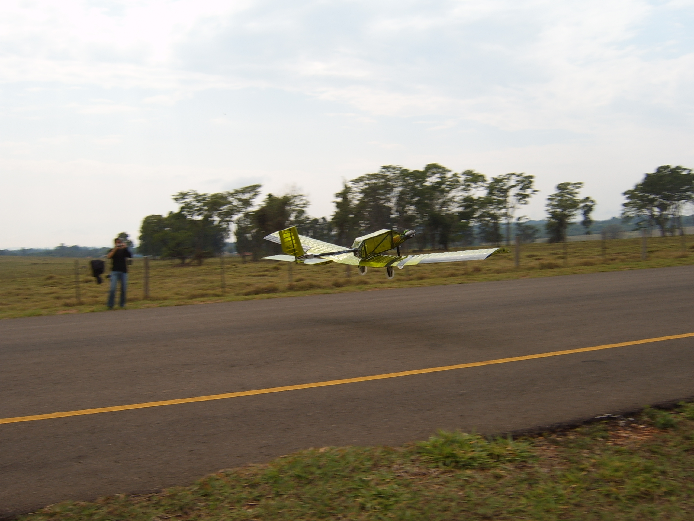

| 2008 |
SAE AeroDesign East | |
 | EESC-USP Regular
Thanks to good performance in the Brazilian competition, the EESC-USP team returned to the U.S. for the East competition of 2008. This time, unlike the previous two years, the team preceded the title of the regular class. Given that the U.S. competition scores were based primarily on cargo, the team used a configuration similar to Bravo 2007, while incorporating construction methods employed in Alpha 2007. The final aircraft weighed about 6.5 pounds and carried in its best valid flight, 22 pounds of payload; the plane also took off with 25 pounds of cargo, but it crashed shortly after the takeoff. In this competition, we finished in 4th place in addition to ensuring the honorable mentions for Best Design and Best Oral Presentation. |
| SAE AeroDesign Brazil |
| EESC-USP Charlie
The Charlie of 2008 had two innovations extremely beneficial not only for the aircraft but also for the team’s experimental library: the winglets (wing tip devices present in a large number of modern aircraft) and the Jett .90 engine (more powerful and stable than the modified OS in the previous year). Weighing 12.3 lb, the monoplane had its fuselage manufactured in balsa wood and carbon fiber; its aerodynamic surfaces (wing, elevator and rudder) made with carbon tubing spars and balsa ribs and its winglets manufactured in Styrofoam and coated fiberglass. The aircraft took off with 42.5 pounds of cargo and snatched all the honorable mentions for the open class (greater accuracy, greater payload, best oral presentation and best project) and the title of champion of the category. This result allowed the team to be, again, eligible to represent Brazil in the AeroDesign East Competition in 2009. |  |
 |
EESC-USP Alpha
In view of the new quadridimensional hangaring rules of the 2008 Brazilian competition, the Alpha aircraft was reasonably bigger than the project of 2007. Not giving up the scoring for structural efficiency, the team designed a high-wing monoplane made almost entirely of balsa wood reinforced with carbon. Some previous solutions such as the homemade fuel tank (this time, manufactured with a syringe) and the Honeycomb wheels where also incorporated in this plane. The aircraft that scored during the competition weighed 5.7 pounds, although the team had another aircraft (weighing 4.8 lb) made with lighter balsa, it suffered an accident during flight. Still, with the flight of 18 pounds of cargo on the first flight round, the team ensured the 7th place in the regular class. |
| EESC-USP Bravo
Towards greater simplicity and more constructive theory learning on the part of the team members, the beginners of the Bravo 2008 devised a low-wing monoplane with carbon tubes spars and ribbed surfaces, fuselage of balsa wood reinforced with carbon fiber and an innovative damping system on the main landing gears. The empty aircraft weighed 7.5 pounds and its only valid flight was the first flight of the classifying flight round. The rookies, however, did not stop fighting for a flight with a greater payload and stopped only when the aircraft suffered a fall in one of the last rounds of the competition. In the final classification with the team won 21st place in the regular class. |  |